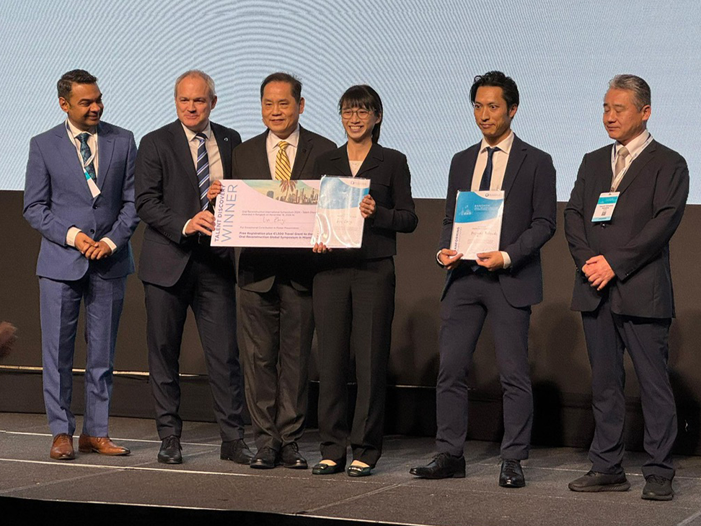

|
Ng Kian Wei I am a full-time data scientist at National University Health System (NUHS) in Singapore. Within NUHS, I manage the technical research and development portfolio for the NUHS Holomedicine Programme, with a focus on mixed reality, applied computer vision and medical image analysis. Working closely with clinicians and other healthcare professionals, many of the research output have or are undergoing transitions to clinical validation and early stage trials to prepare for wide-scale implementation and usage within hospitals. On top of my day job as a data scientist, I am also currently a PhD Student at the National University of Singapore, under the supervision of A/Prof Khoo Eng Tat. |

|
News & Media |
|  |
Research applying AR to dental surgery wins award | CDE NUS
13 Dec 2024 "Research titled “Effectiveness of Hololens Augmented Reality (AR) Headset in Dental Implant Surgery”, helmed by Master’s student Lin Zhiyi (Dentistry), recently clinched the Best Presenter (Talent Discovery Award) at the Oral Reconstruction International Symposium 2024, held in Bangkok between 14-16 November." |

|
Augmented reality tech to deliver faster ultrasound scan results, help with surgical planning | The Straits Times
11 May 2023 "Doctors can soon see scans in real time through an augmented reality (AR) visor that helps them to quickly diagnose injuries or get an update on the status of tumours." |

|
NUHS testing AI, AR to help locate hard-to-find veins in some patients | The Straits Times
3 December 2021 "The veins of some patients can be difficult to find for drawing blood as they may be small or not easily visible under the skin. But artificial intelligence (AI) and augmented reality (AR) may soon address this issue." |
|
Website template courtesy of jonbarron. |